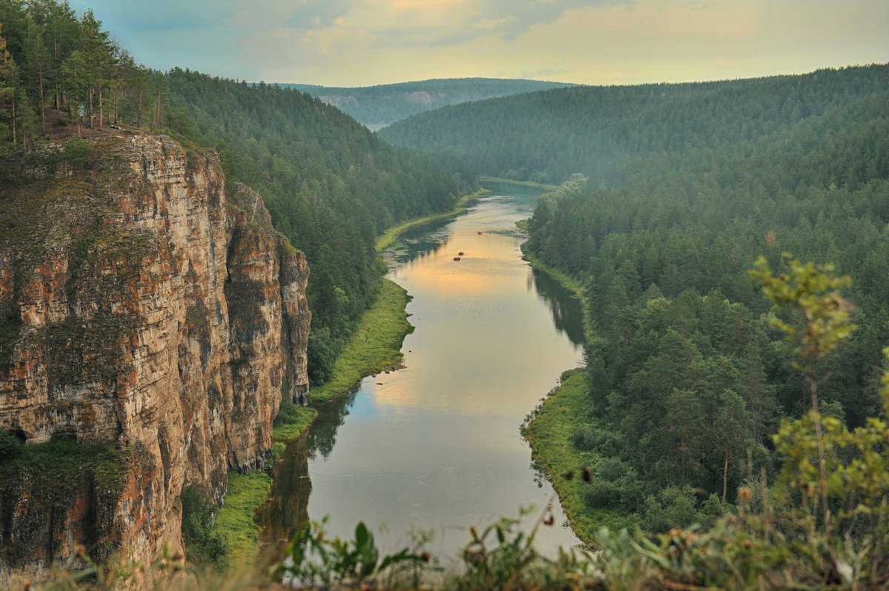
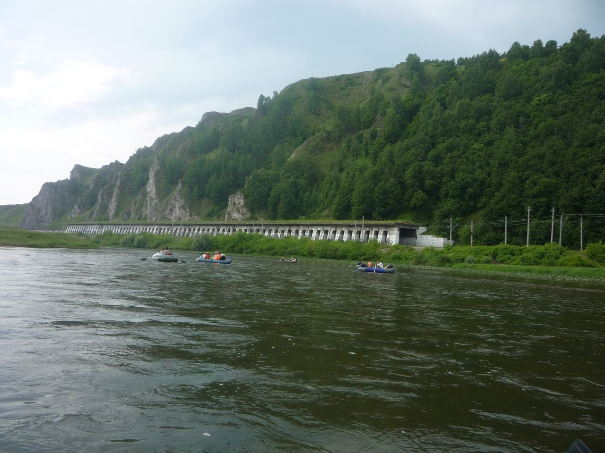
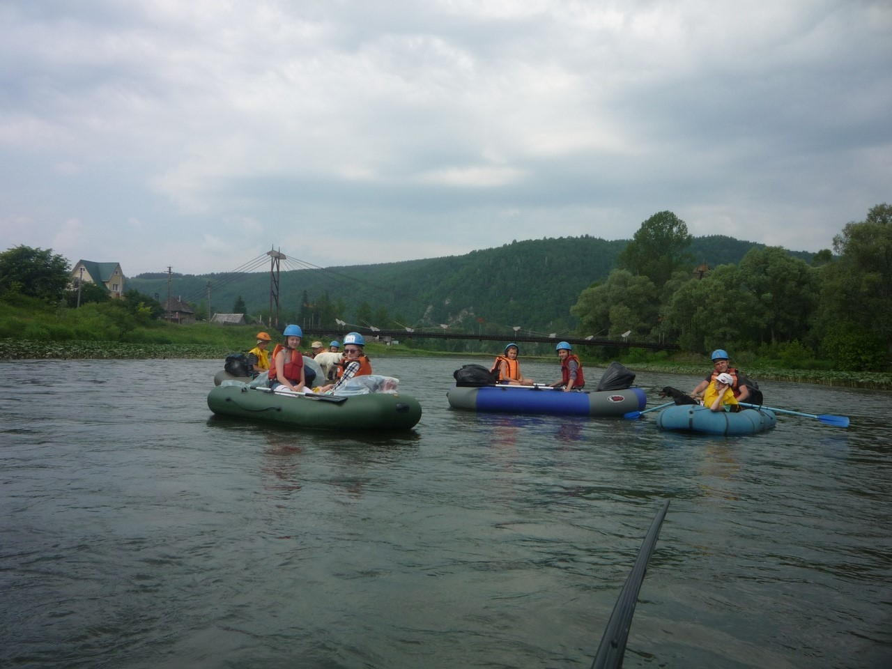
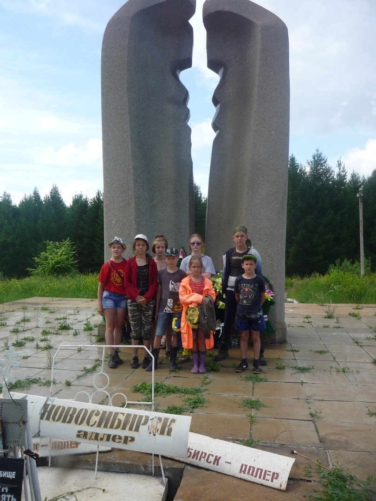
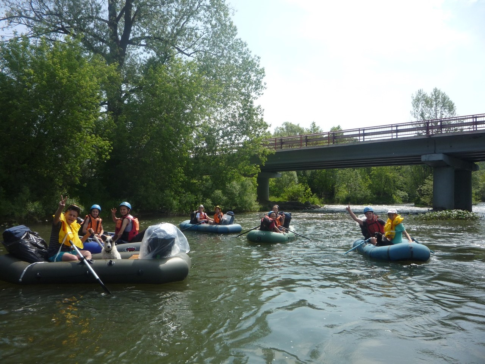
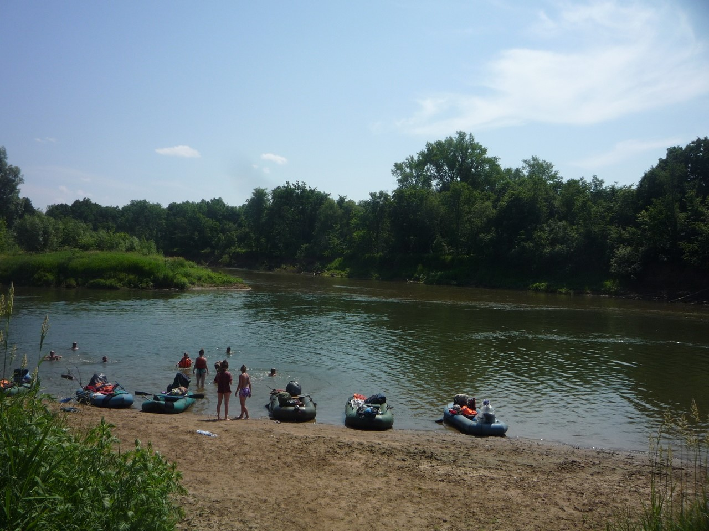
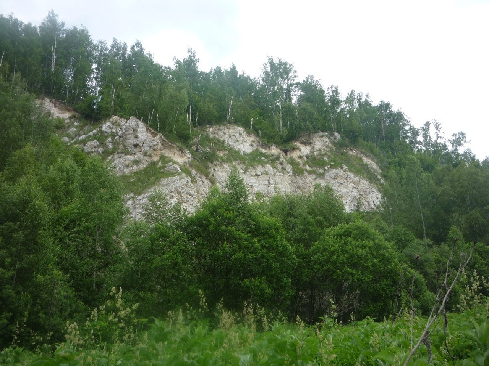
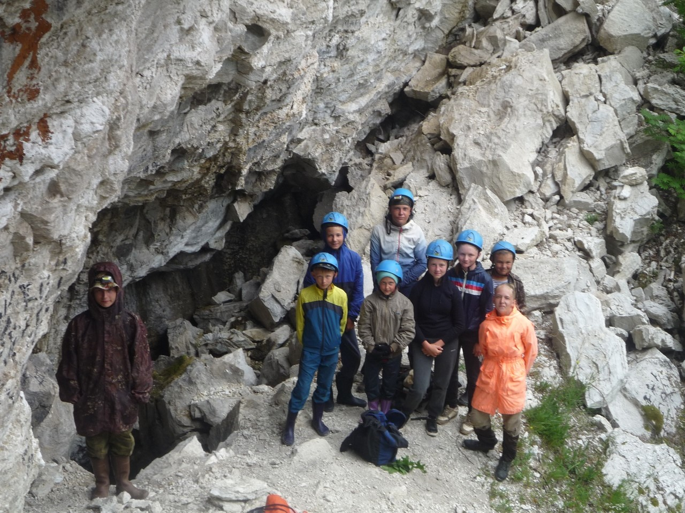
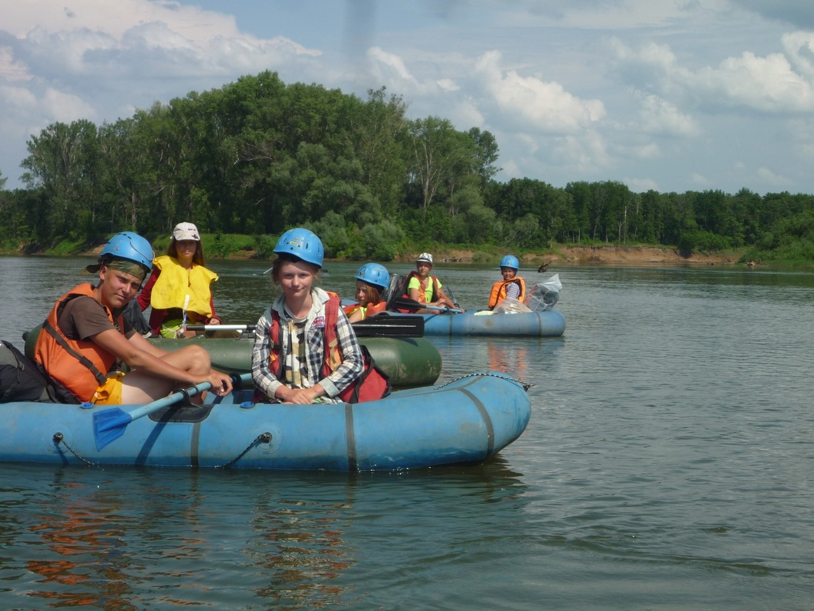
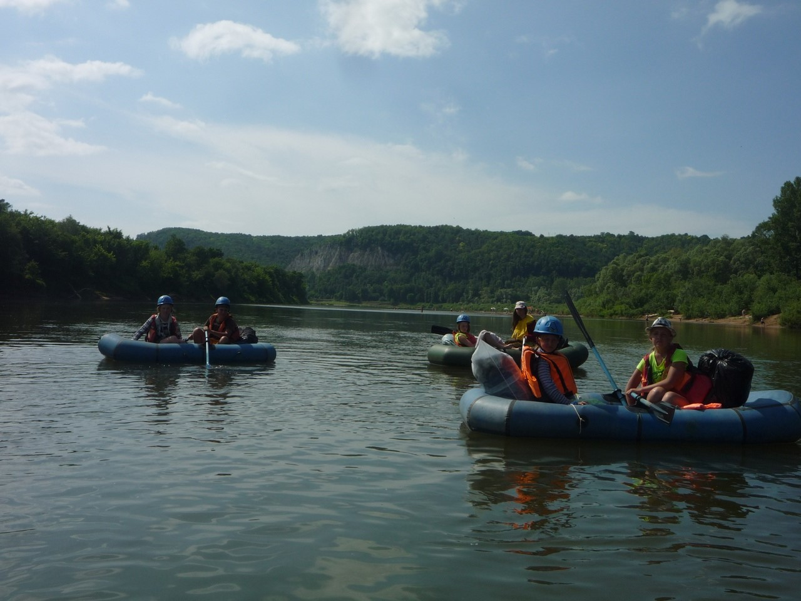

Сим — река на Южном Урале, протекает по территории двух субъектов Российской Федерации — Челябинской области и Республики Башкортостан. Правый приток реки Белой. Длина 239 километров. Площадь водосборного бассейна — 11700 км². Среднегодовой расход воды в устье — 145 м³/с. Исток на северных склонах хребта Амшар. Притоки: Инзер, Миньяр, Аша, Лемеза, Ук.

Город Миньяр – город Аша – деревня Верхний Казаяк – деревня Кузнецовка – устье реки Инзер – деревня Асканыш.
Категория сложности: первая.
Продолжительность: от 2 до 10 дней.
Экскурсионные объекты: Киселёвская пещера или пещера «Плутония» (на выбор) город Аша- Улу-Телякский мемориал, Казаякский карьер- пещера Куэшта -гора Асканыш

Путешествие начинаем от моста у города Миньяр. Здесь удобный съезд к реке и хорошие места для подготовки судов. Отсюда начинается водная часть маршрута. Река здесь совсем неширока и неглубока(1-1, 5 м). Немало и более мелких мест. Нередки и перекаты, так что нужно быть все время настороже. Однако значительных препятствий на Симе нет.
До города Аша (около 45 км) в основном сохраняет горный характер течения. Город Аша – сравнительно молодой город (основан в конце XIX в.). В нем несколько заводов и других предприятий. Сам город стоит на правом берегу, а на левом высится одинокая Липовая гора. Тут городской парк.

Далее деревни идут чередой. Вначале встречается Верхний Казаяк, через 8 километров – Средний Казаяк с возвышающимися Змеиными горками. По их склону уходит вверх хорошо видимая траншея газопровода. Здесь, неподалеку от реки, есть место, памятное для многих жителей бывшего Советского Союза: место улу-телякской трагедии.

Поэтому советуем остановиться на ночлег на поляне правого берега, на склоне Змеиных горок, совершить экскурсию и возложить цветы к обелиску. Он расположен неподалеку от реки (около 5 км), а путь к нему лежит вверх по склону, вдоль злополучного газопровода.
Заодно запланируйте и продолжение вашего радиального маршрута. Змеиные горки и остальная правобережная часть речной долины сложены гипсами-ангидритами. При их добыче образуются карьеры. Вблизи д. Казаяк Хуснуллино расположен один из них.

Далее по реке тянется глубокий и длинный плес. Километров через шесть на крутояре правого берега появляется другая деревня – Нижний Казаяк, а километром ниже, на левом берегу, большой золотистый пляж. Здесь можно встать на обед. Все чаще встречаются большие поляны. На высоком крутояре, сложенного красными глинами, расположена деревня Расмекеево. Почти напротив нее видна поросшая камышом старица Сима.
Вскоре за очередным поворотом показывается железобетонный мост. Советуем пристать к левому берегу и встать там на ночлег или дневку.

Дорога, идущая по правому берегу в северо-западном направлении, выведет вас через три километра к селу Улу-Теляк. Здесь вы сможете пополнить запас продуктов. Если вдруг у вас что-то случилось или больше нет времени продолжать маршрут, то появляется возможность сойти с него – рядом железнодорожная станция.
Впереди вас ожидает незаселенный участок маршрута длиною в 22 километра. Он тянется вплоть до автомобильного моста, перекинутого через Сим. Там, в километре от реки, на правом берегу находится деревня Тикеево. Удивительно красивы берега Сима, особенно с высоты автомобильного моста, перекинутого через Сим вблизи Тикеево. Они то темнеют в зарослях камыша и рогоза, куда спешат молодые утиные выводки, то встают отвесными крутоярами, то спускаются от правобережного редколесья песчано-галечными отмелями.За мостом Сим делает две-три излучины и длинным прямым руслом упирается в глубокий омут, расположенный в самом устье реки Лемеза. В 13 км от устья Лемезы, на левом берегу, расположена деревня Пятилетка. Строения ее несколько удалены от заливаемой весной поймы реки. В ней можно пополнить запасы хлеба. Отсюда в сторону станции Иглино ходят рейсовые автобусы.

Вскоре за деревней начинается стремительный перекат – это Сим прокладывает себе новое русло, прорывая перемычку меандры. Ровные участки реки перемежаются длинными, почти сходящимися излучинами. Ниже по течению на высоком склоне правого коренного берега появляется деревня Кузнецовка. Советуем встать на противоположный берег и организовать полудневку. Это место хорошо тем, что защищено от непрошеных гостей и удобно для посещения пещеры Куэшта, которая расположена в подошвенной части одноименной горы, километрах в трех от места вашего ночлега.Путь к пещере прост. От реки идет дорога в деревню. По грунтовой дороге пройдите деревню Кузнецовку до середины и сверните по проселочной дороге на северо-запад, к виднеющейся справа залесенной горе Куэшта.С той стороны горы бежит ручей, перегороженный двумя земляными плотинами, образующими небольшие пруды. Вскоре дорога заходит в редколесье и примерно через километр выводит на опушку леса.

Слева тянутся поля, а справа редкостойное чернолесье из липы и вяза. Дорога раздваивается, и нужно выбрать ту, что сворачивает вправо вниз, к просвету поляны с видимым скальным обнажением горы Куэшта. Там, в ее нижней разрушенной части, и находится узкий щелевидный вход в одноименную пещеру.
Пещера сквозная. По уточненной топосъемке, произведенной спелеологом Юрием Соколовым в 2002 году, общая длина ее ходов составляет 800 метров. В ней расположено четыре зала, извилистый коридор, имеющий ответвления. Стены пещеры испещрены узорной резьбой – следами растворения гипсов.

От Кузнецовки начинается заключительная маршрута. Через три поворота – вновь памятное место. Здесь, где некогда находилась деревня Бердино, а ныне высятся строения домов коллективных садов, в 1918 году была организована переправа партизан. Под ожесточенным огнем бойцы навели мост, форсировали реку и разгромили войска белочехов.Сим делает плавный поворот и устремляется на север, к месту бывшей деревни Бузанка. Здесь, у подножья гипсового обнажения, образующего правый берег реки, в него впадает ручей. Советуем причалить на обед. Противоположный берег весь зарос чернолесьем. К самой воде (просто рукой подать) свисают гроздья черной смородины: прекрасная заварка для витаминного чая.Устье Инзера, левого притока Сима, появляется через 8 километров. Напротив него видны многочисленные строения коллективных садов, занявших место старой деревни Асканыш.

Здесь наш маршрут заканчивается. Отвесные скальные кручи горы Акташ вплотную подходят к реке. Для прощания с рекой, подарившей нам свою красоту, поднимитесь по склону горы Асканыш на ее вершину: для этого пройдите вверх по луговому склону на запад около 200 метров. Внизу, на берегу реки, вы увидите дома, стоящие на длинной и узкой пойменной поляне. От них вверх по склону горы идет хоженая тропа. По ней вы и вернетесь к оставленному лагерю. Панорама, открывшаяся вашему взору, запомнится на всю жизнь.
